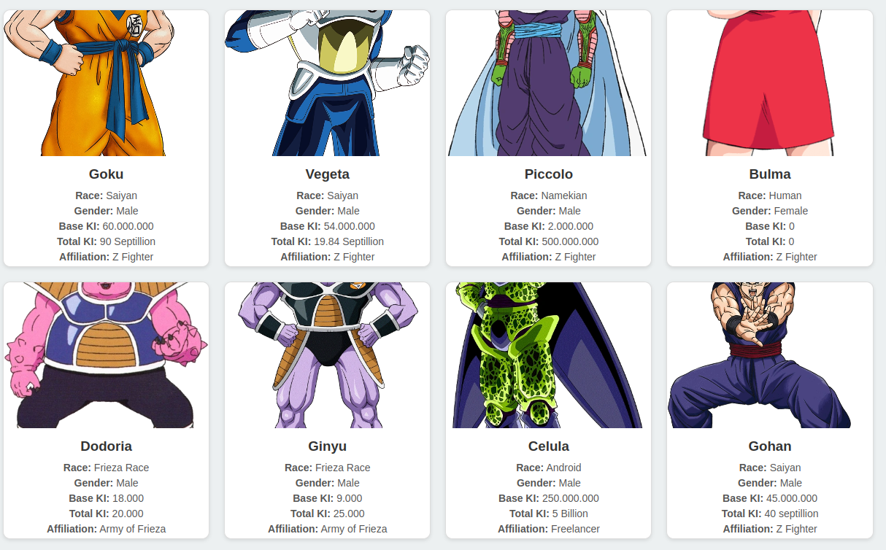

Programación asíncrona con JS
Normalmente, el código de un programa determinado se ejecuta directamente, y solo sucede una cosa a la vez. Si una función se basa en el resultado de otra función, tiene que esperar a que la otra función termine y regrese, y hasta que eso suceda, todo el programa se detiene esencialmente desde la perspectiva del usuario.
Cuando una app web se ejecuta en el navegador y ejecuta un gran bloque de código sin retornar el control al navegador, este mismo puede parecer que se congela. Esto es llamado blocking; el navegador es bloqueado para que el usuario no pueda seguir interactuando y realizando otras tareas hasta que la app web retorne el control sobre el procesador. 1
JavaScript es tradicionalmente single-threaded. Aún con múltiples procesadores, solo se puede ejecutar tareas en un solo hilo, llamado el hilo principal (main thread). Actualmente existen herramientas de JavaScript como los Web workers que permiten enviar parte del procesamiento a un hilo separado.
Los web workers son muy útiles, pero tienen limitaciones. La mayor es que no pueden acceder al DOM — no se puede logar que un worker modifique directamente algo de la UI. El segundo problema es que a pesar de que el código se ejecuta en un worker no es bloqueador, es simplemente sincrónico. Esto se convierte en un problema cuando una función depender en los resultados de múltiples procesos previos para funcionar.
Para arreglar dichos problemas, los navegadores nos permiten ejecutar ciertas operaciones asincrónicamente. Características como las Promises permiten establecer la ejecución de una operación (por ejemplo, buscar una imagen desde un servidor), y luego esperar hasta que el resultado sea retornado antes de ejecutar otra operación. Como la operación está sucediendo en otro lugar, el hilo principal no está bloqueado mientras la operación asincrónica está siendo procesada.
Podemos pensar en Síncrono como algo bloqueante en donde toda la operación se ejecuta de forma secuencial y por lo tanto, debemos esperar a que se complete para procesar el resultado. Por el contrario algo Asíncrono es no bloqueante donde la finalización de la operación se señala más tarde lo que hace posible que la respuesta sea procesada en diferido. 2
Ejemplo
function myGreeting() {
console.log("Antes");
setTimeout(function() {
console.log('Hello, Mr. Universe!');
}, 2000);
console.log("Despues");
}
myGreeting();
Patrones asíncronos en JS
Callbacks
Los callbacks son la pieza clave para que Javascript pueda funcionar de forma asíncrona. De hecho, el resto de patrones asíncronos en Javascript está basado en callbacks de un modo u otro, simplemente cambian la sintaxis para trabajar con ellos más cómodamente.
Un callback no es más que una función que se pasa como argumento de otra función, y que será invocada para completar algún tipo de acción. Generalmente la función callback se ejecuta cuando la función principal termina y normalmente hacemos uso de los valores que resultan de la función principal.
Ejemplo
setTimeout(function(){
console.log("Hola Mundo con retraso!");
}, 1000)
//También podemos pasar una variable que contenga una función
const myCallback = () => console.log("Hola Mundo con retraso!");
setTimeout(myCallback, 1000);
Otro ejemplo
function saludar(nombre, callback) {
const saludo = `Hola ${nombre}`;
callback(saludo);
}
saludar("Pepe", function(resultado){
console.log(resultado);
});
Callback Hell
Los callbacks también pueden lanzar a su vez llamadas asíncronas, asi que pueden anidarse tanto como se desee. Inconveniente, podemos acabar con código como este:
setTimeout(function(){
console.log("Etapa 1 completada");
setTimeout(function(){
console.log("Etapa 2 completada");
setTimeout(function(){
console.log("Etapa 3 completada");
setTimeout(function(){
console.log("Etapa 4 completada");
// Podríamos continuar hasta el infinito...
}, 4000);
}, 3000);
}, 2000);
}, 1000);
Éste es uno de los inconvenientes clásicos de los callbacks, además de la indentación, resta legibilidad, dificulta su mantenimiento y añade complejidad ciclomática. Al Callback Hell también se le conoce como Pyramid of Doom o Hadouken.
Es muy común caer en el Callback Hell cuando tenemos que usar valores calculados previamente por diferentes funciones asíncronas.
Ejemplo
function comprarTaquito(taquitosActuales, callback){
const taquitos = taquitosActuales + 1
callback(taquitos)
}
function comprarTresTaquitos(taquitosActuales, callback){
const taquitos = taquitosActuales + 3
callback(taquitos)
}
function comprarCincoTaquitos(taquitosActuales, callback){
const taquitos = taquitosActuales + 5
callback(taquitos)
}
// no tengo taquitos :(
let tacos = 0
//compro 1 taco
comprarTaquito(tacos, function(primeraCompra){
console.log('taquitos: ' + primeraCompra)
//una vez compre mi primer taco, compro 3 más !
comprarTresTaquitos(primeraCompra, function(segundaCompra){
console.log('taquitos: ' + segundaCompra)
//una vez compre mi primer taco y 3 más, compro 5 extra :o
comprarCincoTaquitos(segundaCompra, function(tercerCompra){
console.log('taquitos: '+ tercerCompra)
})
})
});
Promises
Una promise (promesa) es un objeto que representa el resultado de una operación asíncrona, como comentamos anteriormente las promesas se basan en callbacks pero mejora la sintaxis. Cuando llamamos a una función implementada con este patrón, dicha función nos retornará inmediatamente una promesa como garantía de que la operación asíncrona finalizara en algún momento, ya sea con éxito o con un fallo.
Una vez tenemos la promesa debemos usar un pas de callback: uno para el caso en el que todo va bien (resolución de la promesa resolve) y otro para el caso en el que hay un fallo (rechazo de la promesa reject).
Sintaxis
const promise = new Promise(function(resolve, reject) {
// codigo
if (/*si todo sale bien*/) {
resolve("Promesa resuelta");
}
else {
reject(Error("Algo salió mal"));
}
});
Ejemplo
const promise = new Promise((resolve, reject) => {
const number = Math.floor(Math.random() * 10);
setTimeout(
() => number > 5
? resolve(number)
: reject(new Error('Menor a 5')),
1000
);
});
promise
.then(number => console.log(number))
.catch(error => console.error(error));
Una característica interesante de las promesas es que pueden ser encadenadas. Esto es posible gracias a que la llamada .then() también devuelve una promesa. Esta nueva promesa devuelta será resuelta con el valor que retorne el callback de resolución original (el que hemos pasado al primer then()). Con esto evitamos el Callback Hell.
Para evitar verbosidad, podemos encadenar las promesas de un modo mas corto, empleando el método .catch(rejectCallback) para catpurar cualquier rechazo que ocurra en cualesquiera de las promesas encadenadas. Solo se necesita una única sentencia catch() al final de una cadena de promesas.
Ejemplo
fetch(document.URL.toString())
.then(result => {
console.log(result);
return "Primer Then"
})
.then((result) => console.log(`Fetch completado, página mostrada despues de ${result}`))
.catch(e => console.log(`Error capturado: ${e}`));
La plantilla típica para crear funciones asíncronas usando promesas es la siguiente:
const myAsyncFunction = () => {
return new Promise((resolve, reject) => {
// Carga de la promesa (normalmente tareas asíncronas).
if ( /* evalúa condición */ ) {
resolve(`Éxito!`);
} else {
reject(`Fallo!`);
}
});
}
Ejemplo
const checkServer = (url) => {
return new Promise((resolve, reject) => {
fetch(url)
.then(response => resolve(`Estado del Servidor: ${response.status === 200 ? "OK" : "NOT OK"}`))
.catch(() => reject(`Error al localizar URL`));
});
}
checkServer(document.URL.toString())
.then(result => console.log(result))
.catch(e => console.log(e));
Es muy frecuente consumir más de una promesa a la vez y habitualmente es deseable que se ejecuten en paralelo. Es decir, lanzamos varias tareas asíncronas al mismo tiempo y recogemos sus correspondientes promesas a la espera de que una, o todas, se resuelvan. Para estos casos contamos con dos herramientas de composición de gran utilidad: Promise.all() y Promise.race().
Promise.all()
Promise.all() acepta un array de promesas y devuelve una nueva promesa cuya resolución se completará con éxito una vez que todas las promesas originales se hayan resuelto satisfactoriamente, o en caso de fallo, será rechazada en cuanto una de las promesas originales sea rechazada. Esta promesa compuesta, además, nos devolverá un array con los resultados de cada una de las promesas originales.
Ejemplo
const p1 = Promise.resolve(3);
const p2 = 1337;
const p3 = new Promise((resolve, reject) => {
setTimeout(resolve, 100, "foo");
});
Promise.all([p1, p2, p3]).then(values => {
console.log(values); // [3, 1337, "foo"]
}).catch(reason => {
console.log(reason)
});
Promise.race()
Promise.race() es similar con la diferencia será resuelta tan pronto como se resuelva alguna de las promesas originales, ya sea con éxito o fallo. De ahí el nombre del método, es una competición, la primera en terminar gana.
Ejemplo
const p1 = new Promise( (resolve, reject) => {
setTimeout(resolve, 500, "uno");
});
const p2 = new Promise( (resolve, reject) => {
setTimeout(resolve, 100, "dos");
});
Promise.race([p1, p2]).then( value => {
console.log(value); // "dos"
// Ambas se resuelven, pero la p2 antes.
}).catch(reason => {
console.log(reason)
});
Async / Await
Las promesas supusieron un gran salto en Javascript al introducir una mejora sustancial sobre los callbacks y un manejo más elegante de nuestras tareas asíncronas. Sin embargo, también pueden llegar a ser tediosas. Las funciones async y la palabra clave await surgieron para simplificar el manejo de las promesas. Son puro azúcar para hacer las promesas más amigables, escribir código más sencillo, reducir el anidamiento y mejorar la trazabilidad al depurar. Pero recuerda, async \ await y las promesas son lo mismo en el fondo.
La palabra clave async declara una función como asíncrona e indica que una promesa será automáticamente devuelta, se añade a las funciones para decirles que devuelvan una promesa en lugar de devolver directamente el valor.
Ejemplo
async function hello() { return "Hello" };
hello().then((value) => console.log(value));
La ventaja real de las funciones asincronas aparecen cuando las combinas con la palabra clave await, el await debe ser usado siempre dentro de una función declarada como async.
await esperará automáticamente (de forma asíncrona y no bloqueante) a que una promesa se resuelva. await puede ser puesta frente a cualquier funcion async basada en una promesa para pausar tu codigo en esa linea hasta que se cumpla la promesa, entonces retorna el valor resultante. Mientras tanto, otro código que puede estar esperando una oportunidad para ejecutarse, puede hacerlo.
Ejemplo
const checkServerWithSugar = async (url) => {
const response = await fetch(url);
return `Estado del Servidor: ${response.status === 200 ? "OK" : "NOT OK"}`;
}
checkServerWithSugar(document.URL.toString())
.then(result => console.log(result));
Multiples awaits
Presta mucha atención cuando trabajes con múltiples promesas con el operador await. La mayoría de las veces querrás evitar apilar sentencias await, a menos que una dependa de la otra. Apilar múltiples await es equivalente a lanzar una promesa cuando la anterior haya sido resuelta. Es decir, ejecutar las promesas encadenadamente, de forma secuencial. Y esto no siempre es lo deseable.
Ejemplo de llamadas en serie (el segundo await tiene que esperar a que termine el primero)
const delay = time => new Promise(resolveCallback => setTimeout(resolveCallback, time));
async function wait() {
await delay(500);
await delay(500);
return "Ha transcurrido, como mínimo, 1 segundo.";
};
wait().then(result => console.log(result));
Sin embargo, podemos hacer una espera en paralelo del siguiente modo:
const delay = time => new Promise(resolveCallback => setTimeout(resolveCallback, time));
async function wait() {
const d1 = delay(500);
const d2 = delay(500);
await d1;
await d2;
return "Ha transcurrido, como mínimo, 500ms.";
};
wait().then(result => console.log(result));
Ejemplo de usar el valor de un await en la siguente función
const p1 = function() {
return new Promise( (resolve, reject) => {
setTimeout(resolve, 500, "uno");
});
}
const p2 = function (texto) {
return new Promise( (resolve, reject) => {
setTimeout(resolve, 100, `${texto}, dos`);
});
}
async function contarEnTexto() {
const t1 = await p1();
const t2 = await p2(t1);
return t2;
}
contarEnTexto().then(result => console.log(result));
Podemos ver un ejemplo de como usarlo en una clase https://developer.mozilla.org/es/docs/Learn/JavaScript/Asynchronous/Async_await#asyncawait_class_methods
Manejo de errores
TRY ... CATCH
La declaración try...catch señala un bloque de instrucciones a intentar (try), y especifica una respuesta si se produce una excepción (catch).
La sentencia try consiste en un bloque try que contiene una o más sentencias. Las llaves {} se deben utilizar siempre, incluso para una bloques de una sola sentencia. Al menos un bloque catch o un bloque finally debe estar presente. Esto nos da tres formas posibles para la sentencia try:
1 2 3 | |
Un bloque catch contiene sentencias que especifican que hacer si una excepción es lanzada en el bloque try. Si cualquier sentencia dentro del bloque try (o en una funcion llamada desde dentro del bloque try) lanza una excepción, el control cambia inmediatamente al bloque catch . Si no se lanza ninguna excepcion en el bloque try, el bloque catch se omite.
La bloque finally se ejecuta despues del bloque try y el/los bloque(s) catch hayan finalizado su ejecución. Éste bloque siempre se ejecuta, independientemente de si una excepción fue lanzada o capturada
Ejemplo
try {
throw "myException"; // genera una excepción
}
catch (e) {
// sentencias para manejar cualquier excepción
logMyErrors(e); // pasa el objeto de la excepción al manejador de errores
}
Si una promesa gestionada por await es rechazada o un error se dispara dentro de la función declarada como async, la promesa que automáticamente devuelve la función async también será rechazada. En este caso, podemos encadenar un .catch() para notificar el error
checkServerWithSugar(document.URL.toString())
.then(result => console.log(result))
.catch(e => console.log(`Error Capturado Fuera de la función async: ${e}`));
Pero si necesitáramos gestionar estos erroes internamente, en la propia función async, deberemos envolver nuestro código con un try / catch del siguiente modo
const checkServerWithSugar = async (url) => {
try {
const response = await fetch(url);
return `Estado del servidor: ${response.status === 200 ? "OK" : "NOT OK"}`;
} catch (e) {
throw `Manejo intero del error. Error original: ${e}`;
}
}
checkServerWithSugar(document.URL.toString())
.then(result => console.log(result))
.catch(e => console.log(`Error Capturado Fuera de la función async: ${e}`));
fetch
En algunos ejemplos anteriores hemos usado la función fetch. Ahora veremos con más detalles para que se usa y su funcionamiento.
La API Fetch proporciona una interfaz para recuperar recursos (incluso a través de la red). Resultará familiar a cualquiera que haya usado XMLHttpRequest, pero la nueva API ofrece un conjunto de características más potente y flexible. 4
Una de las características más importantes del API fetch es que utiliza promesas, es decir, devuelve un objeto con dos métodos, uno then() y otro catch() a la que pasaremos una función que será invocada cuando se obtenga la respuesta o se produzca un error. 5
Note
Aquí hay que aclarar un punto con los errores: si se devuelve un código HTTP correspondiente a un error no se ejecutará el catch(), ya que se ha obtenido una respuesta válida, por lo que se ejecutará el then(). Sólo si hay un error de red o de otro tipo se ejecutará el catch().
Otro aspecto importante que hay que comprender es que para obtener el body o cuerpo del mensaje devuelto por el servidor deberemos obtener una segunda promesa por medio de los métodos del objeto Response. Por ello será muy habitual ver dos promesas encadenadas, una para el fetch() y otra con el retorno del método que utilicemos para obtener el body.
Ejemplo
fetch('https://httpbin.org/ip')
.then(function(response) {
return response.text();
})
.then(function(data) {
console.log('data = ', data);
})
.catch(function(err) {
console.error(err);
});
Opciones de la petición
A la función fetch(url, options) se le pasa por parámetro la url de la petición y, de forma opcional, un objeto options con opciones de la petición HTTP. En este objeto de opciones podemos definir varios detalles:
Los valores más usados son:
- method: Método HTTP de la petición. Por defecto, GET. Otras opciones: HEAD, POST, etc.
- body: Cuerpo de la petición HTTP. Puede ser de varios tipos: String, FormData, Blob, etc.
- headers: Cabeceras HTTP. Por defecto, {}.
- credentials: Modo de credenciales. Por defecto, omit. Otras opciones: same-origin e include.
Otros valores que podemos definir son:
- mode: modo del la solicitud: ‘cors’, ‘no-cors’, ‘same-origin’, ‘navigate’.
- cache: forma de utilización de la caché: ‘default’, ‘no-store’, ‘reload’, ‘no-cache’, ‘force-cache’, ‘only-if-cached’.
- redirect: forma de gestionar la redirección: ‘follow’, ‘error’, ‘manual’.
- referrer: valor utilizado como referrer: ‘client’, ‘no-referrer’ una URL.
- referrerPolicy: especifica el valor de la cabecera referer: ‘no-referrer’, ‘no-referrer-when-downgrade’, ‘origin’, ‘origin-when-cross-origin’, ‘unsafe-url’.
- integrity: valor de integridad de la solicitud.
Ejemplo de enviar detos en formato JSON
fetch('https://httpbin.org/post',{
method: 'POST',
headers: {
'Content-Type': 'application/json'
},
body: JSON.stringify({"a": 1, "b": 2}),
cache: 'no-cache'
})
.then(function(response) {
return response.json();
})
.then(function(data) {
console.log('data = ', data);
})
.catch(function(err) {
console.error(err);
});
Propieadades de la respuesta
En la función que pasamos a then() vamos a recibir un objeto Response. Este objeto contiene la respuesta que hace el servidor y dispone de una serie de propiedades con los valores de esa respuesta y métodos que pueden resultarnos útiles al implementar nuestro código.
Por el lado de las propiedades, tenemos las siguientes:
- status: Código HTTP de la respuesta (100-599).
- statusText: Texto representativo del código HTTP anterior.
- ok: Devuelve true si el código HTTP es 200 (o empieza por 2).
- headers: Cabeceras de la respuesta.
- url: URL de la petición HTTP.
Por el lado de los métodos, tenemos los siguientes:
- response.text(): Devuelve el contenido en formato texto
- response.json(): Devuelve el contenido como objeto Javascript
- response.arrayBuffer(): Devuelve el contenido como ArrayBuffer
- response.blob(): Devuelve el contenido como valor que podemos manejar con URL.createObjectURL()
- response.formData(): Devuelve el contenido como FormData
- response.clone(): Crea y devuelve un clon de la instancia en cuestión.
Note
Una característica que tenemos que tener en cuenta es que sólo podemos hacer una obtención de body, tras la cual ya no podemos volver solicitar otra conversión. Para resolver esta situación el objeto Response tiene el método clone() que nos permite duplicar el objeto y hacer múltiples gestiones de body. 6
Ejemplo
fetch('https://httpbin.org/ip')
.then(function(response) {
console.log('response.body =', response.body);
console.log('response.bodyUsed =', response.bodyUsed);
console.log('response.headers =', response.headers);
console.log('response.ok =', response.ok);
console.log('response.status =', response.status);
console.log('response.statusText =', response.statusText);
console.log('response.type =', response.type);
console.log('response.url =', response.url);
return response.json();
})
.then(function(data) {
console.log('data = ', data);
})
.catch(function(err) {
console.error(err);
});
Es muy común usar las arrow function con el fetch
Ejemplo
fetch('https://httpbin.org/ip')
.then(response => response.text())
.then(data => {
/** Procesar los datos **/
console.log('data = ', data);
})
.catch(err => {
console.error(err);
});
También lo podemos usar con async/await
Ejemplo
const request = async (url) => {
const response = await fetch(url);
if (!response.ok)
throw new Error("WARN", response.status);
const data = await response.json();
return data;
}
request('https://httpbin.org/ip').then(data => {
/** Procesar los datos **/
console.log(data);
}).catch(err => {
console.error(err);
});
Ejemplo práctico. Mostrar Usuarios de una API
Objetivos:
- Consumir datos desde la API Random User Generato
- Mostrar los usuarios en la página con template literals (string con backticks)
- Renderizar los datos dinámicamente en HTML
<!DOCTYPE html>
<html lang="es">
<head>
<meta charset="UTF-8">
<meta name="viewport" content="width=device-width, initial-scale=1.0">
<title>Usuarios de API</title>
<style>
body { font-family: Arial, sans-serif; }
#usuarios {
display: flex;
}
.usuario {
border: 1px solid #ddd;
padding: 10px;
margin: 10px;
border-radius: 5px;
background-color: #f9f9f9;
}
</style>
</head>
<body>
<h1>Lista de Usuarios</h1>
<button id="cargar">Cargar Usuarios</button>
<div id="usuarios"></div>
<script>
document.getElementById("cargar").addEventListener("click", cargarUsuarios);
async function cargarUsuarios() {
let respuesta = await fetch("https://randomuser.me/api/?results=5");
let datos = await respuesta.json();
mostrarUsuarios(datos);
}
function mostrarUsuarios(usuarios) {
let contenedor = document.getElementById("usuarios");
contenedor.innerHTML = ""; // Limpiar contenido anterior
usuarios.results.forEach(usuario => {
let htmlUsuario = `
<div style="border: 1px solid #ddd; padding: 10px; width: 250px; text-align: center;">
<img src="${usuario.picture.large}" alt="Foto de ${usuario.name.first}" style="border-radius: 50%; width: 100px;">
<h3>${usuario.name.first} ${usuario.name.last}</h3>
<p><strong>Edad:</strong> ${usuario.dob.age}</p>
<p><strong>Email:</strong> ${usuario.email}</p>
<p><strong>País:</strong> ${usuario.location.country}</p>
</div>
`;
contenedor.innerHTML += htmlUsuario; // Agregar cada usuario al contenedor
});
}
</script>
</body>
</html>
Ejercicios Prácticos
Obtener datos de una API con fetch
-
Usa fetch para obtener información de la API pública JSONPlaceholder y mostrar los títulos de los primeros 5 posts.
URL de la API
https://jsonplaceholder.typicode.com/posts. Usar fetch dentro de async/await.Aqui teneis muchas APIs gratuitas para practicar https://publicapis.dev/
Simulación de compra en línea
Crea una función realizarCompra() que reciba un producto y un precio, y simule una compra en línea con los siguientes pasos:
- Esperar 2 segundos simulando el procesamiento del pago.
- Si el precio es mayor a 1000, rechazar la compra con un mensaje de error.
- Si el pago es exitoso, mostrar "Compra de [producto] realizada por $[precio]".
// Pruebas
realizarCompra("Laptop", 1200); // Error: El precio supera el límite permitido.
realizarCompra("Teclado", 50); // Compra de Teclado realizada por $50
DragonBall
- Crea una funcion que llame a la API de DragonBall para obtener el listado de personajes. Documentacion de la API. https://web.dragonball-api.com/documentation
-
Modifica tu pagina web para que muestre el listado de personajes.
Ejemplo: (mantener el estilo creado en el ejercicio de CSS) 
Referencias
-
https://developer.mozilla.org/es/docs/Learn/JavaScript/Asynchronous ↩
-
https://lemoncode.net/lemoncode-blog/2018/1/29/javascript-asincrono ↩
-
https://developer.mozilla.org/es/docs/Learn/JavaScript/Asynchronous/Async_await ↩
-
https://developer.mozilla.org/es/docs/Web/API/Fetch_API/Utilizando_Fetch ↩
-
https://www.todojs.com/api-fetch-el-nuevo-estandar-que-permite-hacer-llamadas-http/ ↩